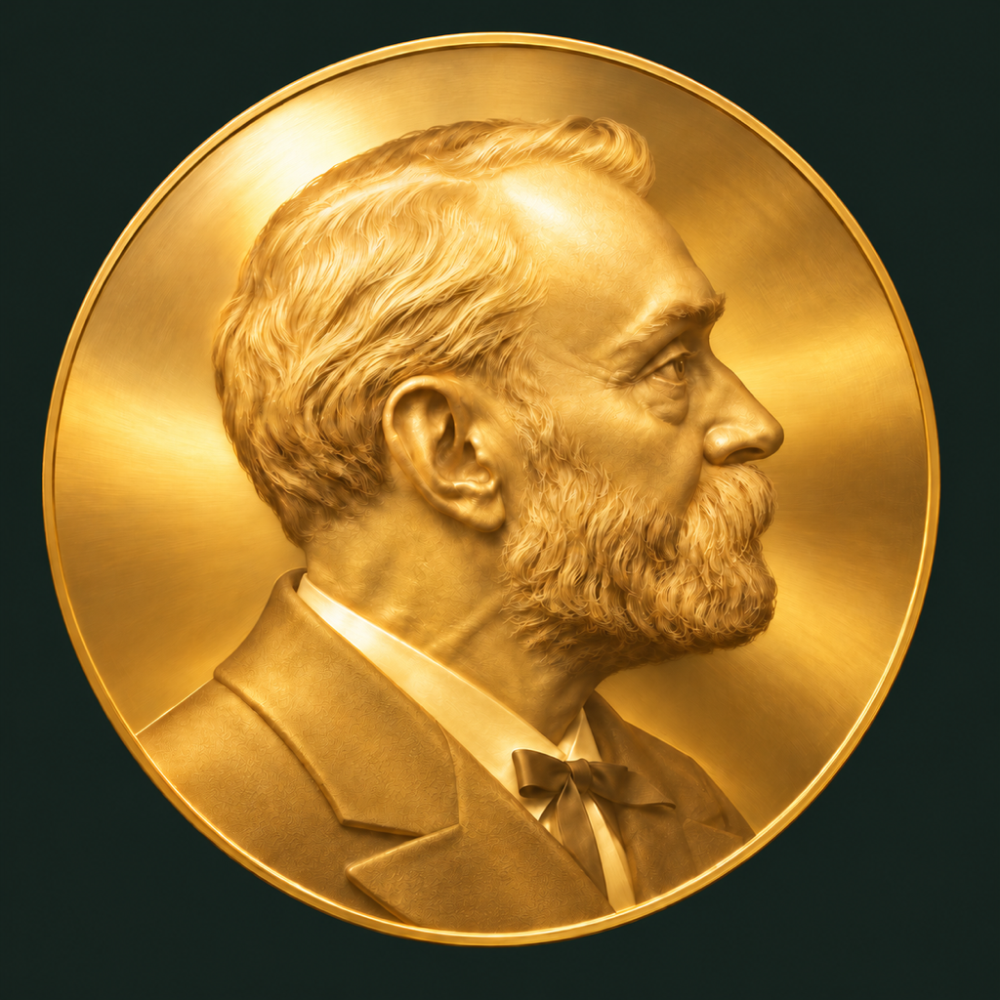

Nobel Prize Winners
Every Nobel laureate and prize since 1901, on your iPhone and iPad.
Browse all six Nobel Prize categories: Physics, Chemistry, Physiology or Medicine, Literature, Peace and Economic Sciences. Read about the people and organisations behind each prize, follow more than a century of awards on a timeline, and keep the ones that inspire you.
- LaureatesBiographies from Wikipedia, birth and death dates, affiliations, and every prize with its motivation.
- PrizesWho shared it and why, the prize amount then and in today's money, and the years no prize was awarded.
- SearchFind anyone by name, category or year. No accents needed.
- TimelineEvery year since 1901, filtered by category, with a quick jump to any year.
- FavoritesStar laureates and prizes and find them again in one tap.
- OccasionsOptional reminders of birthdays, prize centenaries and Nobel Day.
- OfflineWorks without a connection once the data is downloaded.
- PrivateNo account, no ads, no tracking. Your favorites stay on your device.
Data from NobelPrize.org. Biographies and photos from Wikipedia and Wikimedia Commons. Nobel Prize Winners is an independent app, not affiliated with or endorsed by the Nobel Foundation or Nobel Prize Outreach.